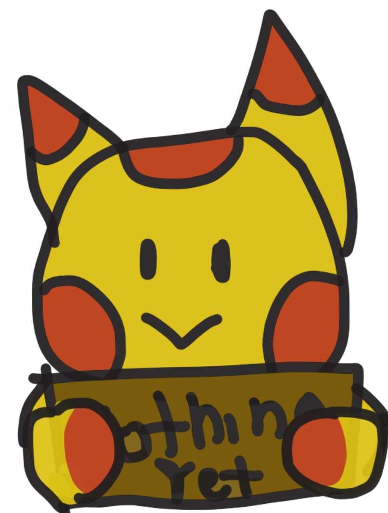

Web development student who is learning!.

Hi, I am Sophia Hartland and this is my portfolio. I am learning many things including CSS, HTML, and Javascript. I hope to one day make a Pet Game Site!
My hobbies include code, writing, reading, drawing and crochet. I am trying to learn knitting, needlefelting and quilting. I also play DND and like looking at other TTRPGs with one of them being Mausritter.
HTML: I use this to organize pages!
CSS: I use this to set styles so the pages are pretty!
JavaScript: I am learning this so I can make fun games!
Color Theory: I use this so the colors work!
Being Creative: I use this to come up with ideas!
The index page of my petsite that I'm working on along with some other pages. All of this was coded on sublime and then copied and arrange in GitHub.
I first started this project in the Summer of 2025. I'll update it in my profile when it has major changes. I have no set timeline for it!
Nothing here yet! I'll update this when I have more!
I was inspired by many petsites when thinking up my own and I have linked them below!
I was inspired by Geepers because it is like the now defunct site Goatlings. It is also a college student made site that is currently in beta which inspires me to think that I too could make a functional pet site too.
I was inspired by Marapets because of its games and I hope to make games that bring as much joy as the games on Marapets give me.
I was inspired by Pixel Cats End because it's pretty unique. It has a grid Adventure system which I really like and I want to one day be able to make a similar systems on my Pet Site. I also like its relationship mechanics, job systems, and resource It is also made by one person which is what my Pet Site would be like. I would be making all of Creature Hideway's code, art, and layout.
My favorite types of things are listed below
Favorite Book Series: Warrior Cats
Favorite Movie: Lilo and Stitch
Favorite TV Show: Weird History Food
Favorite Colors: Yellow, Orange, Blue and Pink
Favorite Color Scheme: Maroon and Goldenrod
Favorite Animal Hyenas
Favorite Foods: Bread, Fiesta Pizza and Pretzels
If you want to talk you may message me.
Email: sophart@bgsu.edu
Location: Ohio